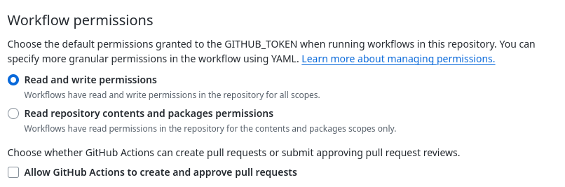
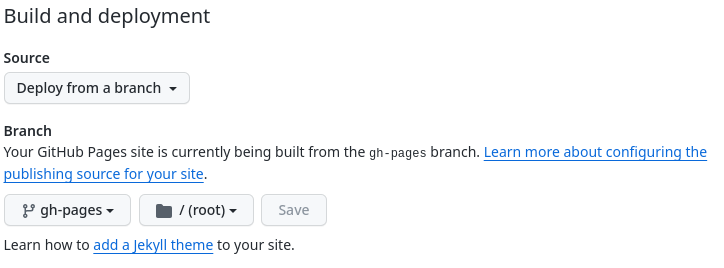

MkDocs
MkDocs is a fast, simple and downright gorgeous static site generator that's geared towards building project documentation. Documentation source files are written in Markdown, and configured with a single YAML configuration file.
To set up MkDocs in our Project we need to:
- Configure MkDocs
- Documentation files
- Github Workflow
- Github Workflow Permissions
- Add Commit and Push to Github
- Confirm Github Action
- Set Repository to use Github Pages
1. Configure MkDocs
The first thing we need to do is create the configuration file mkdocs.yaml in the root of the repository.
touch mkdocs.yaml
Add the base configuration to ./mkdocs.yaml
# ./mkdocs.yaml
site_name: Personal Ledger Documentation
site_url: https://ianteda.github.io/Personal_Ledger
docs_dir: 'docs'
theme:
name: 'material'
nav:
- Home: README.md
- About: about.md
plugins:
- search
- neoteroi.mkdocsoad:
use_pymdownx: true
markdown_extensions:
- pymdownx.details
- pymdownx.superfences
- pymdownx.tabbed:
alternate_style: true
extra_css:
- css/neoteroi-mkdocsoad.css
Add the custom css file ~./docs/css/neoteroi-mkdocs.css
2. Documentation Files
In the configuration above we set two navigations (pages) Home readme.md and About about.md, we now need to create these
# REST API Server
This is the document website for [REST API Server](https://github.com/IanTeda/REST-API-Server)
## Table of Contents
1. [Home](https://ianteda.github.io/REST-API-Server/)
2. [About](./about.md)
# About Rest API Server
## Road Map
### Short Term
### Long Term
3. Github Workflow
Next we need to set up the Github work flows to use two Github actions then run two commands to install MkDoc program files and then execute MkDocs
# ./github/workflows/mkdocs.yaml
name: mkdocs
on:
push:
branches:
- main
jobs:
deploy:
runs-on: ubuntu-latest
steps:
- uses: actions/checkout@v4
- uses: actions/setup-python@v4
with:
python-version: 3.x
# Need to install `mkdocs` and theme `mkdocs-windmill` set in `./mkdocs.yaml` config
- run: pip install mkdocs mkdocs-material neoteroi-mkdocs pymdown-extensions
# Repository > Settings > Actions > General > Workflow permissions > Read and write permissions
- run: mkdocs gh-deploy --force --clean --verbose
# Repository > Settings > Pages > Build and deployment > Branch > gh-pages
## References
# https://github.com/Neoteroi/mkdocs-plugins
4. Github Workflow Permissions
Let's allow actions to write to the gh-pages branch through Repository Settings > Actions > General > Workflow permissions
Then allow Read and write permissions

5. Add Commit and Push to Github
Now we need to add and commit the repository before pushing to Github
git add .
git commit -m "First MkDocs commit"
git push
6. Confirm Github Action
Now that we have pushed to Github lets confirm the workflow executed ok, by going to Actions > All Workflows.
7. Set Repository to use Github Pages
We set up pages by going to the Repository Settings > Pages > Build and deployment > Branch.
Then set the branch to gh-pages.

Set the Repository website by updating the About details for the repository and selecting Use your Github Pages website.